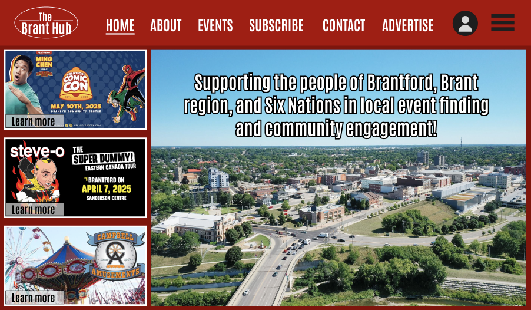

BScene website
A website re-design for a client.
The issue
Bscene is a website with an accompanying newspaper that Jason manages, and has visions for it to be a community hub for the Brant region. However, it was not getting the traction that Jason and Wiktor wanted. To solve this, we did user research, contextual inquiries, prototyping, and usability testing to come up with our final, high-fidelity prototype.
My role
My roles in this project were:
- Contributing in the user research, interviewing and doing contextual inquiries
- Made a couple pages of the Figma prototype
- Conducted usability testing
How we tackled the issue
Initial research
Firstly, we set out to interview 20 people in total. These were random people of varying demographics from Brant region. We asked them questions about Brantford in general, the culture surrounding it, BScene, and transportation. We also did contextual inquiries regarding the website and the newspaper, giving them tasks to do to find out how easy it was to use them.
The results
The results we got were very mixed. There were a group of people that loved Brantford, and there were a group that absolutely hated it. According to our results, we made 2 personas: The local lover, and The local hater. The local lovers were usually of the older demographic, thinks Brantford is a nice place to be, attends events regularly, and has transportation. The local haters were of the younger demographics, thinks Brantford is boring, does not attend events, and does not have transportation. Most of our interviewees liked the website, but the newspaper ,not so much. The personas were used to shape our research from here on.
Developing a prototype
We developed a prototype using Figma. The design thinking behind it was to make it intuitive, take the flaws of the old website, and create a new solution that both our personas could enjoy. Our design is more accessible, factoring in the fact that older people will be using the website. The prototype targets the event finding/discovery section specifically, because that was the issue that was presented.
How we tackled the issue
Developing a prototype
We developed a prototype using Figma. The design thinking behind it was to make it intuitive, take the flaws of the old website, and create a new solution that both our personas could enjoy. Our design is more accessible, factoring in the fact that older people will be using the website. The prototype targets the event finding/discovery section specifically, because that was the issue that was presented.
Usability testing
Using our prototype, we conducted usability tests with 10 people, particularly of the older demographic. We asked them to do 2 tasks: To find a specific event, and to post an event. Through our research, we found that they mostly understood the layout, and thought it was an intuitive solution.
The results
The feedback we got were:
- The deep red color was a little too strong.
- The safety measures for events could be shown.
- There could be a notification feature.
- It was a little too text-heavy, especially the event description.
- It could use more filters.
Based on our results, the next steps we could take are:
- Have multiple color choices (light theme, dark theme) and text size choices.
- Add a notification feature, and a feature to share to social media.
- Make it less text-heavy and engaging to read through.
- Have more filtering options.
What I learnt
From this experience, I got to learn many things. It was my first time working with a client, and I learnt how to communicate with them, present information to them, and meet their needs. I also learnt how to use Figma further as this was my first time using the prototype feature of Figma.